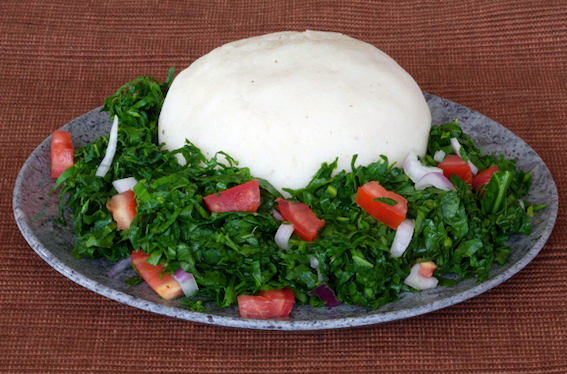

Ugali Recipe

Description
Ugali is a staple of the Kenyan diet, eaten by many on a daily basis. It is generally served as a side - the perfect accompaniment for stews, curries, or veggie dishes.
If you visit Kenya, don't be surprised to see locals eating ugali with their hands, using it almost like a utensil. The proper way is to pinch a small bit off with your fingers, roll into a ball, and use your thumb to make a small depression for scooping up a bite of stew.
Ingredients
- 2 cups of water
- 1-2 cups of medium/coarse-ground white cornmeal
Steps
- Bring the water to a boil in a medium saucepan.
- Reduce the heat to low, and stirring constantly with a whisk, slowly add the cornmeal to the boiling water. The ugali will begin to thicken quite quickly.
- Keep stirring and pressing the mixture against the sides of the pan to break up the lumps.
- The mixture with begin to come away from the sides of the pan.
- Allow it to cook on the low heat for 2 to 3 minutes.
- Transfer the ugali from the pan to a plate and then pat it down into a round shape.
- Serve while hot with your favorite stew or curry and enjoy!